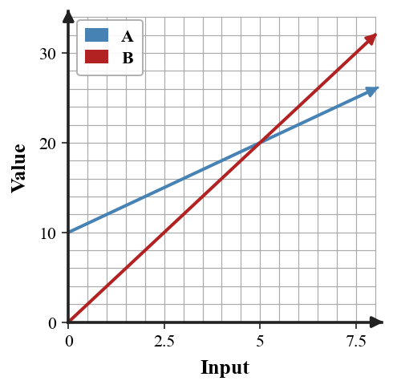

Mathematical idea: An equation states that two quantities are equal, and its solution answers a question in context.
Today you will check proposed solutions, build equations from contexts, solve one-variable equations, and explain whether solutions are reasonable. You will connect each step back to the situation.
Learning Target: Students will write, solve, and interpret equations that model situations.
I can statements
This is a long-range preview for future lessons. Do not solve it today. Instead, annotate it individually. Circle anything familiar, underline symbols or directions that seem important, and write notes about what information you think will be needed later.
As you annotate, ask yourself: What parts (words, symbols, graphs) do you KNOW? What parts look FAMILIAR? What parts look like jibberish?
Design a one-variable equation model for a realistic school or club situation where the solution is $8$. Include the context, define the variable, write the equation, solve it, and interpret why $8$ makes sense.
Directions
Read the introduction aloud with a partner or in a small group. As you read, annotate the text by highlighting important ideas, circling key vocabulary, and writing short notes about connections, questions, or predictions in the margins.
An equation is a statement that two expressions are equal. A solution is a value that makes the equation true. Checking a solution means substituting it into the equation and comparing both sides.
A variable should represent a meaningful quantity. If $m$ is the number of movies rented, then the solution tells how many movies fit the situation, not just a number from algebra steps.
Many context equations include a fixed amount and a repeated amount. For example, $6+3m=27$ can represent a 6 dollar fee plus 3 dollars for each movie.
Solving an equation uses inverse operations to keep both sides balanced. Each step should preserve equality until the variable is isolated.
After solving, the answer should be interpreted and checked for reasonableness. A decimal answer may not make sense if the situation counts whole people, tickets, or buses.
Stop and Discuss
To check whether a value is a solution, substitute it into the equation and see whether the two sides are equal.
$$3x+2=14$$ $$3(4)+2=14$$ $$14=14$$| Value tested | Left side | Right side | Solution? |
|---|---|---|---|
| $x=4$ | 14 | 14 | yes |
| $x=5$ | 17 | 14 | no |
Context: A solution is the value that makes the model's two quantities balance.
Is $x=6$ a solution to $2x+5=17$?
Is $x=3$ a solution to $5x+4=19$?
Stop and Discuss
First define the variable, then write the equation, solve it, and interpret the answer.
Movie rental situation: a service charges \$6 plus \$3 per movie for a total of \$27.
$$6+3m=27$$ $$3m=21$$ $$m=7$$Context: The solution means 7 movies can be rented for 27 dollars.
A school dance charges \$4 for admission plus \$2 for each snack ticket. Write and solve an equation to find how many snack tickets can be bought with \$18.
A field trip charges \$9 for a bus fee plus \$5 for each meal ticket. Write and solve an equation to find how many meal tickets can be bought with \$44.
Stop and Discuss
Some equations compare two different expressions. The solution is where the two expressions have the same value.
| $x$ | $10+2x$ | $4x$ | Equal? |
|---|---|---|---|
| 4 | 18 | 16 | no |
| 5 | 20 | 20 | yes |

Context: Two plans cost the same at the input where their graphs meet.
Two club plans are modeled by $12+3m=5m$.
Two fundraising plans are modeled by $20+2b=6b$.
Stop and Discuss
A solution should answer the original question and fit the situation's constraints.
| Situation | Possible issue | Reasonableness check |
|---|---|---|
| tickets | fractional answer | tickets usually must be whole numbers |
| time | negative answer | time may not be negative in context |
| money | too large | compare to the stated budget |
Context: Solving is not finished until the value is interpreted with units and checked against the story.
A student solves $5+4t=31$ and gets $t=9$.
Student claim: "The solution is 9, so 9 tickets fit the budget."
A student solves $7+3p=28$ and gets $p=6$.
Student claim: "The solution is 6, so 6 passes fit the budget."
Stop and Discuss
Equations model situations by showing that two quantities are equal. A solution is a value that makes the equation true.
A complete modeling answer defines the variable, writes the equation, solves it, and interprets the solution in context.
A common error is stopping at the algebra answer without checking whether the number makes sense for the situation.
Strong understanding means you can write equations from contexts, solve them accurately, and explain the meaning and reasonableness of the solution.
Look back at the future task. Do not solve it yet. Highlight one part that makes more sense now than it did at the beginning. Circle one part that still feels unfamiliar. Write one sentence about what representation you would look at first.
Is $x=4$ a solution to $3x+2=14$?
A movie rental service charges \$6 plus \$3 per movie. Write and solve an equation to find how many movies can be rented for \$27.
What is one idea about equations as situation models you understand better now than at the start of class? Write at least one complete sentence.
What is one thing about equations as situation models you still want to understand or practice? Be specific — name the idea, not just "everything."